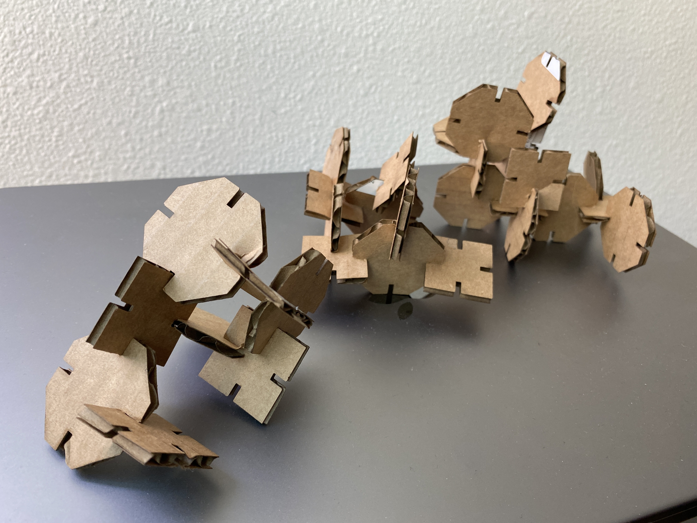

Here's my finished and assembled Press Fit Kit:

Since I don't have any experience with laser cutting, this assignment was a bit intimidating and overwhelming. I decided to make my life easy and create simple shapes for the assignment
I started by sketching shapes that I would like to use and made a paper prototype using a dessert box. I had to adjust the size of the prototype so the shapes aren't overlapping each other when fitted
Once I had settled on the design, I recreated it in Rhino. Before modeling, I measured the cardboard with a caliper which came out to be 3.18mm. I used this measurement to design the gaps for the shape.
These are the shapes that I ended up with: an octogan and square.
I headed to the 8 to do the laser cutting. I followed the written instructions on the board, but had issues bringing the laser cutter bed up to the laser. I asked the staff for help. The issue was that the stroke I set was too thich (1pt) when it was supposed to be 0.01pt. After that issue has been resolved, I was able to get the hang of laser cutting. Additionally, the laser wouldn't fully cut through. The staff advised that I bump up the power which was really helpful!
I experimented with the size of the shapes to see which size I liked and to see if they would fit.
Here are the settings that I used on the laser cutter:
Belinda for giving me a quick rundown on how to use the laser cutter machine. As well as the staff at the 8 for troubleshooting minor issues when laser cutting.